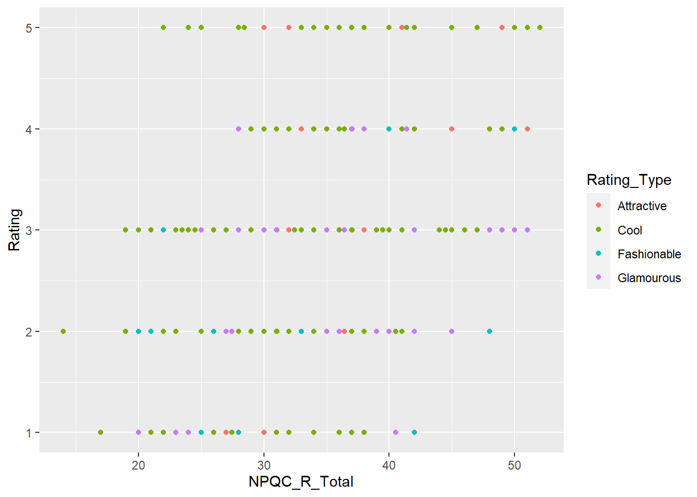

Capítulo 7 La prueba de t (comparar 2 grupos)
En este capítulo vamos a revisar la típica prueba para comparar dos grupos, el t-test.
7.1 ¿Cómo comparamos dos grupos?
Revisa este video (10') y trata de responder:
- ¿Cómo se sabe si dos muestras viene de una misma población o de poblaciones diferentes?
- ¿Cómo podemos usar los intervalos de confianzar para estimar las diferencias entre dos muestras?
7.2 La distribución normal de dos grupos
Revisa este video (9') y trata de responder:
- ¿Para que nos sirve la distribución normal para compara dos muestras?
7.3 La prueba de hipótesis
Revisa este video (12') y trata de responder:
- ¿Cuál es la hipótesis nula cuando comparamos dos muestras?
7.4 El t-test como un modelo líneal general
Revisa este video (15') y trata de responder:
- ¿Cómo se refleja un t-test en un modelo lineal general (GLM)?
- ¿Qué representa el intercepto de la ecuación de un GLM para una variable outcome cuando se comparan dos grupos?
- ¿Qué representa la pendiente de la ecuación de un GLM para una variable outcome cuando se comparan dos grupos?
7.5 El t-test con R
Ahora vamos a hacer el análisis. Primero seteamos nuestro directorio de trabajo y cargamos las librerías que necesitemos (si no las tienes instaladas debes instalarlas). Luego importamos el set de datos y le damos una mirada.
setwd("C:/Users/Usuario/Documents/JoseLuis/UTalca_2018/Estadistica_Bookdown/estadistica")
library(ggplot2)
library(Hmisc)
library(Rmisc)
library(effsize)
library(pastecs)
library(reshape2)
library(car)
library(effsize)spiderLong <- read.csv("data/ansiedad_por_arañas_indep.csv", header = TRUE) # load data
spiderLong$Condicion <- factor(spiderLong$Condicion)
head(spiderLong)## Sujeto Condicion Conductancia
## 1 1 imagen 30
## 2 2 imagen 35
## 3 3 imagen 45
## 4 4 imagen 40
## 5 5 imagen 50
## 6 6 imagen 35Luego, mirar los datos siempre es bueno graficar.
# Podemos usar esta función para calcular los estadísticos a través de los participantes.
datac <- summarySE(spiderLong,
measurevar="Conductancia",
groupvars = "Condicion")
# Luego hacemos el gráfico
ggplot(datac, aes(x = Condicion, y = Conductancia)) +
geom_bar(position = position_dodge(width = 0.9),
stat = "identity",
color = "black",
fill = "White",
show.legend=FALSE) +
geom_errorbar(position=position_dodge(.9),
width=.25,
aes(ymin = Conductancia, ymax = Conductancia+se)) +
theme(panel.grid.major = element_blank(),
panel.grid.minor = element_blank(),
panel.background = element_blank(),
axis.line = element_line(colour = "black")) +
scale_y_continuous(limits = c(0,55), breaks = seq(0, 55, 10)) +
ylab("Conductancia")
Recordando lo que acabamos de aprender vamos a comparar los promedios por cada grupo con la información que resulta de aplicar una regresión lineal a estos datos.
Primero describamos los datos.
lapply(by(spiderLong$Conductancia,
spiderLong$Condicion,
stat.desc,
basic = FALSE,
norm = TRUE),
round, 2)## $imagen
## median mean SE.mean CI.mean.0.95 var std.dev coef.var skewness skew.2SE
## 40.00 40.00 2.68 5.90 86.36 9.29 0.23 0.00 0.00
## kurtosis kurt.2SE normtest.W normtest.p
## -1.39 -0.57 0.97 0.85
##
## $real
## median mean SE.mean CI.mean.0.95 var std.dev coef.var skewness skew.2SE
## 50.00 47.00 3.18 7.01 121.64 11.03 0.23 -0.01 0.00
## kurtosis kurt.2SE normtest.W normtest.p
## -1.46 -0.59 0.95 0.62La función by permite calcular los estadísticos. La función round redondea los valores a dos décimas. Y la función lapply permite aplicar la función round de forma másiva.
Ahora, vamos a realiza una regresión lineal. Lo que queremos es predecir los valores de conductancia en función de los grupos (o condiciones) que tenemos. Para realizar la regresión usamos la función lm
Luego de hacer la regresión lineal podemos revisar su contenido con la función summary. Recuerda mirar los coeficientes. ¿Qué ves?
m1 <- lm(Conductancia ~ Condicion, data=spiderLong)
summary(m1)##
## Call:
## lm(formula = Conductancia ~ Condicion, data = spiderLong)
##
## Residuals:
## Min 1Q Median 3Q Max
## -17.0 -8.5 1.5 8.0 18.0
##
## Coefficients:
## Estimate Std. Error t value Pr(>|t|)
## (Intercept) 40.000 2.944 13.587 3.53e-12 ***
## Condicionreal 7.000 4.163 1.681 0.107
## ---
## Signif. codes: 0 '***' 0.001 '**' 0.01 '*' 0.05 '.' 0.1 ' ' 1
##
## Residual standard error: 10.2 on 22 degrees of freedom
## Multiple R-squared: 0.1139, Adjusted R-squared: 0.07359
## F-statistic: 2.827 on 1 and 22 DF, p-value: 0.1068Finalmente, podemos hacer el t-test. Pero, antes de hacerlo debemos verificar si existen problemas de homgeneidad de varianza. Podemos hacerlo con la función leveneTest
leveneTest(spiderLong$Conductancia, spiderLong$Condicion)## Levene's Test for Homogeneity of Variance (center = median)
## Df F value Pr(>F)
## group 1 0.2991 0.59
## 22Luego podemos hacer el análisis estadístico, aplicando la función t.test. De la siguiente forma: newModel <- t.test(outcome ~ predictor, data=df, var.equal = TRUE/FALSE, paired=TRUE/FALSE). Ya que no tenemos problemas de homogeneidad de varianzar seteamos var.equal a FALSE.
t_test1 <- t.test(Conductancia ~ Condicion,
data=spiderLong,
var.equal = TRUE,
paired = FALSE)
t_test1##
## Two Sample t-test
##
## data: Conductancia by Condicion
## t = -1.6813, df = 22, p-value = 0.1068
## alternative hypothesis: true difference in means between group imagen and group real is not equal to 0
## 95 percent confidence interval:
## -15.634222 1.634222
## sample estimates:
## mean in group imagen mean in group real
## 40 47Para terminar siempre es bueno calcular el tamaño del efecto.
t <- t_test1$statistic[[1]]
df <- t_test1$parameter[[1]]
r <- sqrt(t**2/(t**2+df))
r## [1] 0.3374392Ahora, imaginemos que en realidad nuestro diseño experimental era intra-sujetos. Vamos a usar exactamente los mismos datos que antes pero asumiendo un diseño intra-sujetos. Y asumiremos que estos datos viendo en un formato wide.
spiderWide <- read.csv("data/ansiedad_por_arañas_dep.csv", header = TRUE) # load data
head (spiderWide)## Sujeto imagen real
## 1 1 30 40
## 2 2 35 35
## 3 3 45 50
## 4 4 40 55
## 5 5 50 65
## 6 6 35 55Para realizar el gráfico primero transformamos los datos a formato Long.
spiderLongNew <- melt(spiderWide,
id = c("Sujeto"),
measured = c("imagen", "real"))
names(spiderLongNew) <- c("Sujeto", "Condicion", "Conductancia")Luego procedemos como antes.
# Podemos usar esta función para calcular los estadísticos para un diseño intra-sujetos.
datac2 <- summarySEwithin(spiderLongNew,
measurevar="Conductancia",
withinvars="Condicion",
idvar="Sujeto")
ggplot(datac2, aes(x=Condicion, y=Conductancia)) +
geom_bar(position = position_dodge(width = 0.9),
stat="identity",
color="black",
fill="White",
show.legend=FALSE) +
geom_errorbar(position=position_dodge(.9),
width=.25,
aes(ymin=Conductancia, ymax=Conductancia+se)) +
theme(panel.grid.major = element_blank(),
panel.grid.minor = element_blank(),
panel.background = element_blank(),
axis.line = element_line(colour = "black")) +
scale_y_continuous(limits = c(0,55), breaks = seq(0, 55, 10)) +
ylab("Conductancia")
Luego podemos chequear algunos supuestos.
spiderWide$diff <- spiderWide$imagen - spiderWide$real # calcula la diferencia
stat.desc(spiderWide$diff, basic = FALSE, norm = TRUE) # calcula los estadísticos## median mean SE.mean CI.mean.0.95 var std.dev coef.var skewness skew.2SE
## -7.5000000 -7.0000000 2.8311043 6.2312185 96.1818182 9.8072330 -1.4010333 0.2464810 0.1933785
## kurtosis kurt.2SE normtest.W normtest.p
## -1.2342159 -0.5007991 0.9557903 0.7224801Y luego haces el t-test.
t_test2 <- t.test(spiderWide$real, spiderWide$imagen, paired = TRUE)
t_test2##
## Paired t-test
##
## data: spiderWide$real and spiderWide$imagen
## t = 2.4725, df = 11, p-value = 0.03098
## alternative hypothesis: true difference in means is not equal to 0
## 95 percent confidence interval:
## 0.7687815 13.2312185
## sample estimates:
## mean of the differences
## 7# Pero también lo podrías hacer si estuvieran en formato Long.
t.test(Conductancia ~ Condicion, data=spiderLong, paired = TRUE)##
## Paired t-test
##
## data: Conductancia by Condicion
## t = -2.4725, df = 11, p-value = 0.03098
## alternative hypothesis: true difference in means is not equal to 0
## 95 percent confidence interval:
## -13.2312185 -0.7687815
## sample estimates:
## mean of the differences
## -7Para terminar siempre es bueno calcular el tamaño del efecto. Podemos calcularlo de diferentes formas.
t <- t_test2$statistic[[1]]
df <- t_test2$parameter[[1]]
(r <- sqrt(t**2/(t**2+df)))## [1] 0.5976869r## [1] 0.5976869O podemos usar una función.
# Cohen's d = (M2 - M1) / SDpooled
# SDpooled = sqrt((SD1^2 + SD2^2)/ 2)
cohen.d(spiderWide$real, spiderWide$imagen, paired = TRUE)##
## Cohen's d
##
## d estimate: 0.6805173 (medium)
## 95 percent confidence interval:
## lower upper
## 0.04707723 1.31395743